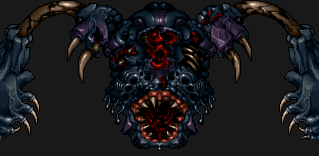
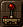
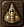

This is an uninhabited moon which is being placed into use by a race of unknown creatures under the apparent funding of Microsol. It is still a breathtaking place to visit, though. Dining: Though the surface is totally uninhabitable and the atmosphere still consists of chlorine and acid, there is an ~Interstellar~ ~House~ of ~Gruel~ already located here. While they haven't received a customer yet who survived the descent to the surface, they do have high hopes. Featured on display in the dining hall are the withered remains of the customers who came but died on the way down. Culture: There is no real culture here, per se, but there are a number of military excursions here by the race who terraformed this planet. As they don't happen to like gruel, nobody in the sector has met one of these creatures yet. Entertainment: Many a scientist comes here after retirement to watch all their fundamental mathematical theorems fall apart as they watch the landmasses floating in apparent defiance to their life's work. |
  "Physicists come here to cry."
 "A mostly undisturbed planet." |